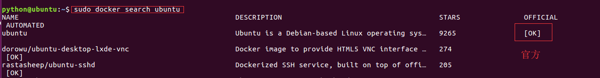
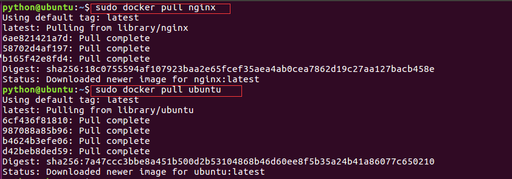
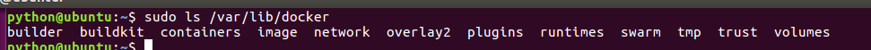
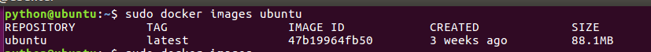
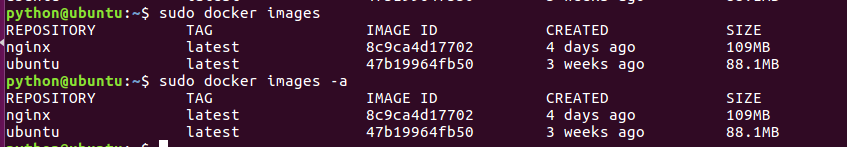
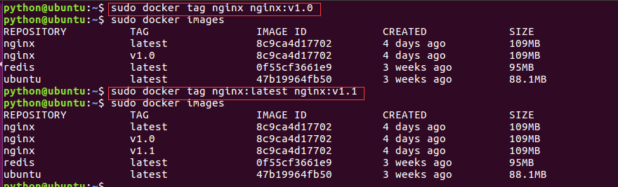
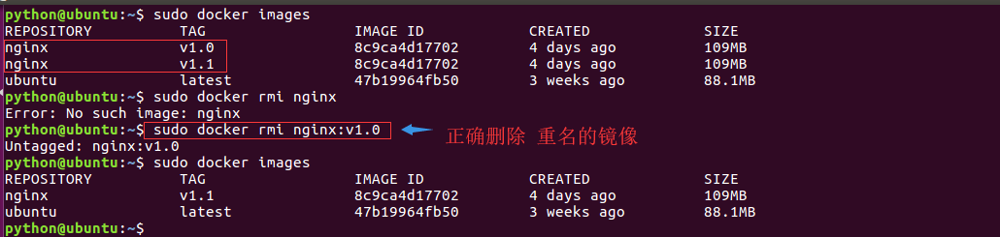
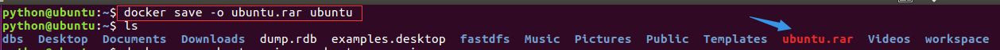
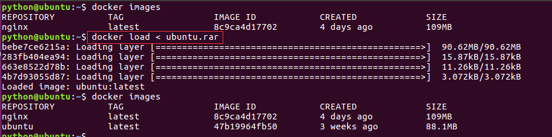
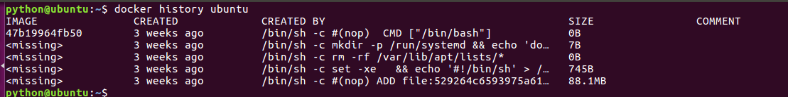

镜像指令
搜索
命令格式：
docker search [image_name]
命令演示：
docker search ubuntu

获取
命令格式：
docker pull [image_name]
命令演示：
docker pull ubuntu
docker pull nginx

获取的镜像在哪里？/var/lib/docker目录下

查看镜像
命令格式：
docker images <image_name>
命令演示：
docker images ubuntu

镜像的ID唯一标识了镜像，如果ID相同,说明是同一镜像。TAG信息来区分不同发行版本，如果不指定具体标记,默认使用latest标记信息
列出所有的本地的镜像
docker images
或
docker images -a

镜像重命名
命令格式：
docker tag [old_image]:[old_version] [new_image]:[new_version]
命令演示：
docker tag nginx:latest nginx:v1.0

删除镜像
命令格式：
docker rmi [image_id/image_name:image_version]
命令演示：
docker rmi ubuntu
注意：
如果一个image_id存在多个名称，那么应该使用name:tag的格式删除镜像

导出镜像
将已经下载好的镜像，导出到本地，以备后用。
命令格式：
docker save -o [包文件] [镜像]
docker save [镜像1] ... [镜像n] > [包文件]
注意：
docker save 会保存镜像的所有历史记录和元数据信息
导出镜像
docker save -o ubuntu.tar ubuntu

导入镜像
为了更好的演示效果，我们先将nginx的镜像删除掉
docker rmi ubuntu
导入镜像命令格式：
docker load < [image.tar_name]
docker load -i [image.tar_name]
注意:
docker load 不能指定镜像的名称
导入镜像文件
docker load < ubuntu.tar

查看镜像历史
查看镜像历史命令格式：
docker history [image_name]
我们获取到一个镜像，想知道他默认启动了哪些命令或者都封装了哪些系统层，那么我们可以使用docker history这条命令来获取我们想要的信息
